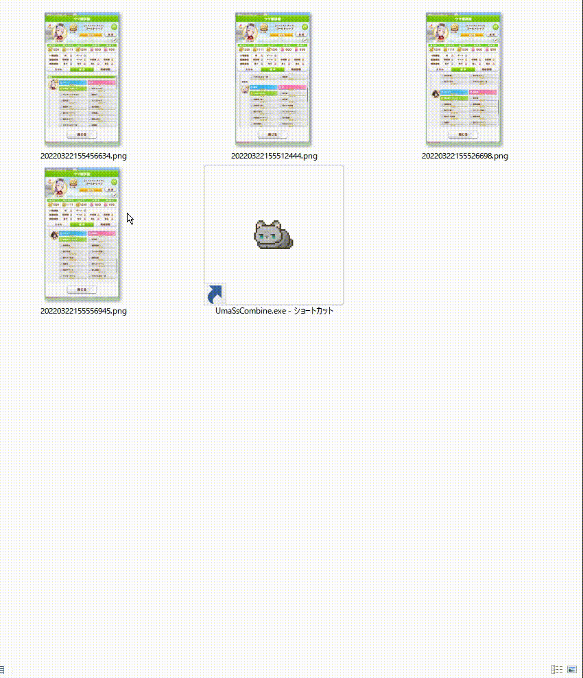

「ウマ娘詳細」画面の「継承タブ」の複数枚画像を1枚に結合するツールです
Windows10 64bit
(Windows11でも多分動きます)
※64bit版でしか動作しません
※ウマ娘が64bit版でしか動作しないのでウマ娘が動く環境なら問題ありません
zipファイルを適当なフォルダに解凍して下さい
追加で、以下のインストールが必要です
.NET Core 3.1 Runtime
Run desktop appsのDownload x64
レジストリ等使用していませんのでフォルダの削除だけです

結合したい複数の「継承タブ」画面のスクリーンショットをUmaSsCombine.exeにドラッグ&ドロップして下さい
結合元の画像を同じフォルダに結合した画像を出力します(ファイル名は「年月月日時分秒ミリ秒.png」)
結合元画像の処理順
・デフォルトはファイル名の昇順に処理を実行していきます
処理順を変更したい場合は、以下を参考にしてください
アプリケーションのアイコンは「なお」さんに頂きました